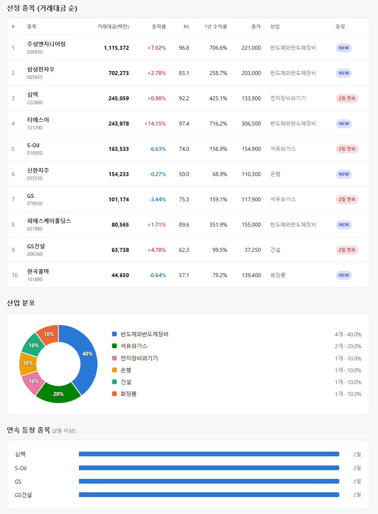
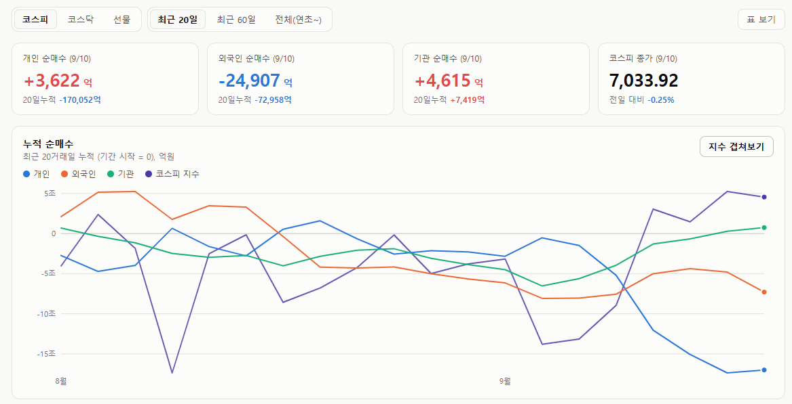
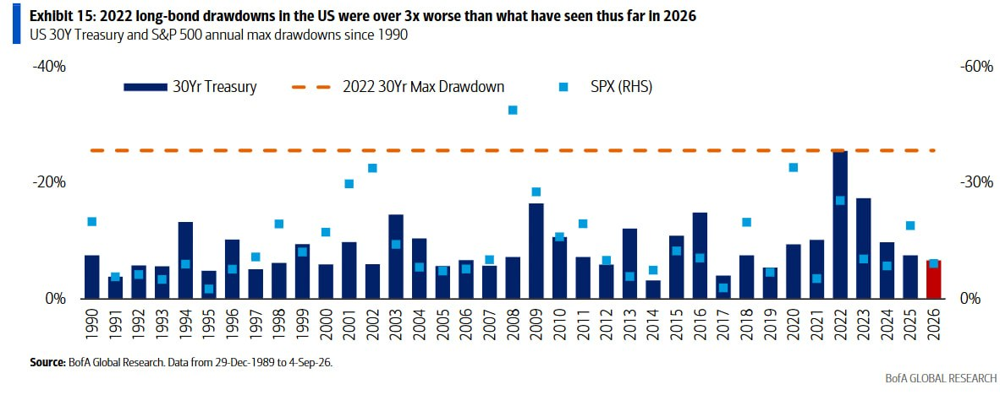

매일의 주도주 정리를 위해 기록합니다.
연속적으로 나온 종목들 또는 상승 후 조정받는 종목 위주로 리서치 해보시면 좋을 것 같습니다.

*오늘 퀀트픽으로는 '티에스이' 입니다.
▶ 2분기 실적이 기대를 크게 상회: 매출 1,888억(+60.5% YoY), 영업이익 525억(+254.7% YoY, 영업이익률 27.8%), 지배주주순이익 369억(+767.6% YoY).
▶ 프로브카드가 성장 엔진: 카드 매출 확대와 자회사 실적 개선이 동반됐고, 수주 흐름이 긍정적이라 하반기에도 실적 상향 기대.
▶ 밸류에이션 재평가 초입: 신한은 "숫자보다 강한 제품 경쟁력"을 근거로 최근 주가 상승에도 밸류에이션 매력이 충분하다며 탑픽으로 제시.
#주도섹터
반도체 장비·부품 및 LED
주요 종목: 티에스이(+14.15%), 주성엔지니어링(+7.02%), 피에스케이홀딩스(+1.71%)
분석: LED장비 테마가 +2.81% 상승했습니다. 반도체와반도체장비(주성엔지니어링, 삼성전자우, 티에스이, 피에스케이홀딩스), 1.1조 원대 거래대금을 흡수한 주성엔지니어링(RS 96.8)이 7.02% 상승을 보였습니다.
생명보험 및 가스·인프라
주요 종목: 한화생명(+4.73%), 삼성생명(+1.98%), 지에스이(+5.90%), 대성에너지(+4.45%), GS건설(+4.78%)
분석: 생명보험 업종이 +2.16%, 가스유틸리티 업종이 +2.00% 상승했습니다. 배당과 실적 안정성을 겨냥한 자금이 유입되었으며, 시스템에서는 건물 건설업의 GS건설(+4.78%, RS 62.3)과 은행업의 신한지주(RS 50.0)가 각각 10.0% 비중으로 포착되어 밸류에이션 하방을 지지했습니다.
로봇 및 곡물·사료
주요 종목: 샘표(+29.99% 상한가), 샘표식품(+29.96% 상한가), 씨메스로보틱스(+13.31%), 흥구석유(+20.02%), 나우로보틱스(+6.74%), 금호타이어(+8.73%).
분석: 콩/대두 테마가 +14.45%, LPG 테마가 +3.35% 급등했습니다. 중소형 로봇 부품주 및 지정학적/원자재 공급망 이슈에 연동된 곡물주로 단기 모멘텀 자금이 분산 유입되었습니다.
#조정섹터
정유·화학 가치주 및 연료전지
주요 종목: S-Oil(-6.63%), 두산퓨얼셀(-6.49%), GS(-3.44%)
분석: 전일 급등했던 수소·연료전지(두산퓨얼셀)에서 차익 매물이 대거 출회되었습니다. 석유와 가스 팩터(S-Oil, GS, 비중 20.0%)와 화장품 팩터(한국콜마, 비중 10.0%)는 지수 반등 국면에서 자금이 반도체 장비로 이동함에 따라 단기 가격 조정을 받았습니다.
#수급동향

코스피 지수는 장중 6,881선까지 밀렸으나 오후 들어 낙폭을 대부분 만회하며 -0.25% 약보합인 7,033.92로 마감, 7,000선 상단 지지력을 입증했습니다. 코스닥 지수는 중소형 테크주의 견조한 흐름에 힘입어 +0.79% 상승한 836.92로 장을 마쳤습니다.
유가증권시장에서 외국인 투자자가 2조 4,907억 원(20일 누적 -7조 2,958억 원)을 순매도했습니다. 반면 개인 투자자가 3,622억 원(20일 누적 -17조 52억 원), 기관 투자자가 4,615억 원(20일 누적 +7,419억 원)을 순매수했습니다.
'제넨셀 사태'로 바이오 섹터의 투자 심리가 일부 위축되었으나, 증권가의 3분기 실적 기대감과 함께 자금이 반도체 장비 및 부품(소부장) 밸류체인으로 대거 집중되며 시장의 질적 모멘텀이 회복되었습니다.
금리는 AI 사이클을 꺾을 수 있을까 — BofA가 짚은 진짜 변수
장기금리가 수년래 최고 수준에 올라 있습니다. 재정 건전성 우려, 끈끈한 인플레이션, 연준 수장 교체까지 겹친 결과죠. 그래서 "이 금리에 AI 랠리가 버틸 수 있을까"라는 질문이 나옵니다. BofA의 답은 이렇습니다. 과거를 보면 매크로 변수가 테크 랠리를 꺾은 경우는 흔치 않았고, 지금은 그 허들이 오히려 더 높다.
① 역사가 말하는 것 — 닷컴 시대에도 금리는 올랐다
90년대 후반 닷컴 국면을 떠올려 보죠. 당시 연준은 기준금리를 100bp 넘게 올렸고, 30년물 금리도 200bp가량 급등했습니다. 그런데 나스닥은 오히려 100~200%대 상승을 이어갔습니다. 금리가 오른다고 기술주 강세가 자동으로 끝나지는 않았다는 겁니다. 최근 중동발 지정학 리스크도 지금까지는 테크 심리를 크게 훼손하지 못하고 있습니다.
② 2022년과 비교하면 — 낙폭이 3분의 1

위 차트가 이 글의 핵심입니다. 1990년 이후 매년 미국 30년물 국채와 S&P500의 연중 최대 낙폭을 나란히 놓은 것인데, 눈여겨볼 건 2022년(긴 막대)과 2026년(빨간 막대)의 차이입니다.
미 30년물 국채의 연초 이후 최대 낙폭은 약 7%로 2022년 25%대와는 온도차가 크고, S&P500 역시 최대 낙폭 약 9% 수준으로 2022년 25%에 비해 상당히 선방하고 있습니다.
금리 '레벨'은 비슷하게 높아졌지만, 그로 인한 자산시장 충격은 전혀 다른 크기라는 뜻입니다. 앞서 다룬 '2022년과 다른 다섯 가지' 글과 같은 결론이죠.
금리가 얼마나 높으냐보다, 얼마나 급하게 무질서하게 움직이느냐가 중요하고, 지금은 아직 후자가 아닙니다. 금융여건 긴축이 실물과 자산시장에 구조적 충격으로 번지지는 않았다는 해석이 가능합니다.
③ 재정 부담 — 아직 한계선 아래지만, 시간이 갈수록 여력은 줄어든다
미국 정부의 순이자지급비용은 GDP 대비 약 4.1%까지 올라왔습니다. 부담스럽지만 90년대 초 고점(4.8%)에는 아직 못 미칩니다.
관건은 AI가 끌어올린 명목 성장이 늘어난 이자 부담을 상쇄해 주느냐입니다. 지금은 그 여력이 있습니다. 다만 고금리가 길어질수록 이 여력은 점점 줄어드는 구조라는 점을 잊으면 안 됩니다.
여기서 미국의 특수성이 드러납니다. '성장으로 흡수하는' 시나리오는 잠재성장률이 견조한 미국이기에 가능한 이야기입니다. 영국이나 일본처럼 성장 동력이 약한 나라는 금리 상승과 성장 둔화라는 이중고에 노출돼 있어 흡수 여력이 부족합니다. 앞서 엔화 글에서 짚었던 일본의 재정-통화 딜레마가 바로 이 대목입니다.
④ 진짜 봐야 할 건 '레벨'이 아니라 '변동성'
지금 시장의 긴장감은 낮습니다. 글로벌 장기금리가 10년 넘는 기간 중 최고 수준인데도, 금리 스트레스 지표(GFSI)와 금리 변동성 모두 낮은 수준입니다. 파생시장은 헤드라인이 시사하는 것보다 근시일 리스크를 훨씬 담담하게 보고 있는 겁니다.
하지만 이 안정이 계속된다는 보장은 없습니다. BofA가 지목한 방아쇠는 연준입니다. 향후 FOMC에서 연준이 시장에 이미 반영된 긴축 경로를 충족하지 못하면 변동성이 다시 살아날 수 있습니다. 시장이 이를 "연준이 성장이나 재정 부담에 발목 잡혔다"는 신호로 읽는 순간, 장기금리가 추가로 튀고, 최악의 경우 2022년 영국 트러스 정부 때 길트 시장이 무너졌던 것 같은 신뢰 위기로 번질 수 있습니다.
바로 이 지점이 앞서 다룬 워시 의장의 잭슨홀 연설과 맞물립니다. 그가 "아직 할 일이 남았다"며 스스로를 9월 인상 쪽으로 몰아넣었는데, 만약 동결로 물러선다면 시장은 그 이유를 캐물을 겁니다. 그 답이 '성장이 걱정돼서'나 '재정이 부담돼서'로 읽힌다면, 그때가 변동성이 깨어나는 순간입니다.
종합하면, 현재 AI 트레이드는 이익 성장 속도가 밸류에이션 상승 속도를 앞서는 국면입니다. 밸류에이션 부담이 훨씬 컸던 90년대 후반보다, 매크로 변수가 이 랠리를 무너뜨리기 위한 허들은 오히려 높아졌습니다.
그렇다고 금리 리스크를 무시하라는 뜻은 아닙니다. 봐야 할 지표가 다르다는 겁니다. 금리 레벨은 이미 고점이지만, 변동성은 아직 잠들어 있습니다. 이 랠리를 흔들 수 있는 건 금리가 얼마나 높은가가 아니라, 잠든 변동성을 누가 깨우느냐입니다. 그 첫 번째 후보가 다음 FOMC입니다.
'금리는 높이가 아니라 흔들림으로 시장을 무너뜨릴 수 있습니다'
오늘 하루도 수고하셨습니다.